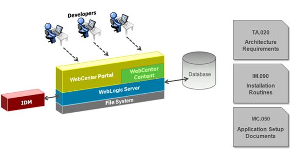
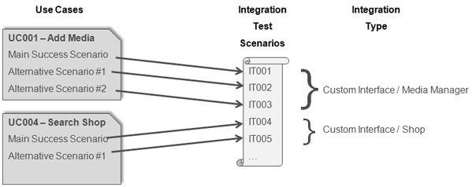
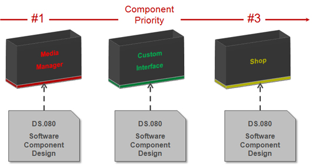
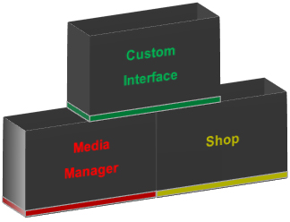
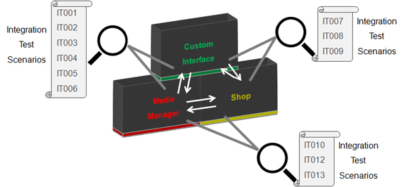
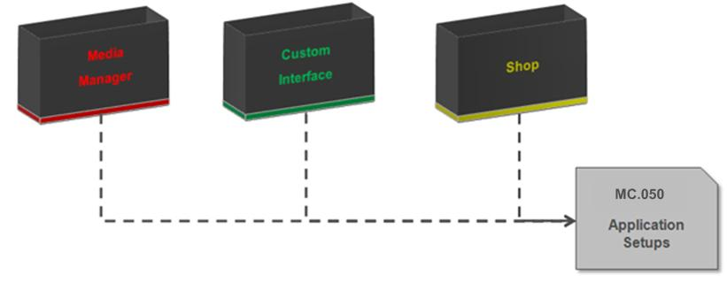
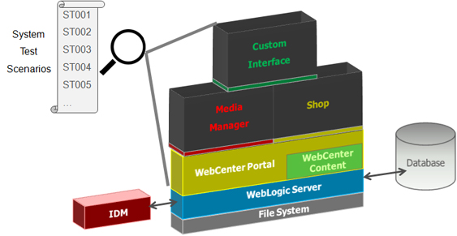
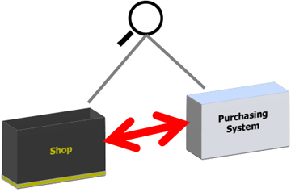

OUM |
WebCenter Supplemental Guide |
||
Method Navigation |
Current Page Navigation |
||
|
|
||||||||
This document contains OUM supplemental task guidance for WebCenter projects.
The task guidelines in this document should be used to supplement the guidelines that appear in the OUM Task Overview.
Verify / refine the Development Environment that you will need during the development.
The Development Environment is available and developers are able to login into the system.

Review the required test data you will need throughout the remainder of the project. This data should support unit tests (in the Development Environment), and any other required tests.
 Review and refine any work products provided in the first iteration of this task.
Review and refine any work products provided in the first iteration of this task.
Develop scripts to test individual components. The tests validate that the component’s inputs, outputs, and processing logic function are as required. This task is mainly performed in parallel with the actual development of the components. Thinking through how the component should be tested increases the understanding of what the component should do or produce.
You can use the templates within the OUM Method Pack, or create an Excel spreadsheet similar to that described on the next slide.
The recommended template for WebCenter is to use an MS Excel spreadsheet with the following structure:
An integration test verifies that application extension components are properly linked and no coding errors are generated when related components are linked together. In this task, you develop scripts to test interaction, or linkage, between related application extension modules. This uncovers any integration problems with other application extension components that provide or use the data manipulated by the target modules.

For each use case to be tested, define Integration Test Scenarios for each feature that should be tested.
The Use Case Integration Test Scenario includes the following information:
Develop the System Test Scenarios that you use during the final full system test at the end of the Construction phase. If the System Test Scenario relates to a use case, use the use case scenarios in the Use Case Model as a starting point. The Context Process Model can also be used to prepare System Test Scenarios at higher-levels, but details are based on the use case scenarios.

This task is where you create the components of the system. You also perform the first round of testing as part of this task. Review and refine any work products provided in the first iteration of this task.
Create the components of the system using an agreed on prioritization.

Integrate the components into a logical assembly of components. Such an assembly can consist of various types of components, including interface components and other types of components. This task ensures that an assembly fulfils its role and that the requirements (use cases and scenarios) identified for the assembly are correctly implemented.

Review and refine the Installation Routines work product to ensure it’s readiness for other environments, particularly Production.

Test the system components on an individual basis to verify that the inputs, outputs, and processing logic of each component functions without errors. This task is performed in parallel with the actual development of the components.
Perform the appropriate integration tests during the Construction phase (and Elaboration phase, if required). Test the components using the scenarios described in the Integration Test Scenarios (TE.035).

Review and refine the detailed setup values needed to configure the WebCenter product(s). Continually refine the work product during the implementation.
For WebCenter engagements, the resulting work product forms a shared central document for retaining and managing general configuration settings for the system. This prevents conflicting configuration across design documents.

Perform the system test to test the operation and integration of all business system flows within the WebCenter system, including the integration of application extensions.

In a WebCenter project, this task validates the integration between the WebCenter system and other systems and verifies that the new system meets defined interface requirements and supports execution of business processes that cross system boundaries.


Define the physical platform and infrastructure that will be implemented to support your technical and application architecture. You map the physical application and database server architectures on to specific computing platforms.
This task updates the work done in the Initial Architecture and Application Mapping (TA.070), incorporating any changes, additions or enhancements that have occurred due to subsequent architecture design work. This task focuses on the future Production Environment and any supporting environments, such as training or production support.
State how the transition is to be made from the old system to the new system. Define your plans for taking the new system into Production. This task may need to be performed several times over the course of the project as you go from an initial Cutover Strategy to a final Cutover Strategy.
For projects that involve the upgrade of WebCenter products, this task is used to define the strategy that will be used during the cutover from the existing Production version to the new software release.
The following points should be taken into consideration:
Develop a general Installation Plan, applicable for the Production Environment as well as any other test or maintenance environments.
In a WebCenter implementation, you should also develop a detailed Transition Plan for moving onto the Production system, as well as an Implementation Contingency Plan.
Using the standard OUM template, complete the steps identified in the Method Pack.
Identify the operational infrastructure for managing and maintaining the application environment, servers, and network infrastructure in Production.
The Production Support Infrastructure Design addresses the operational infrastructure for managing and maintaining the application environment, servers, and network infrastructure. It should address the following:

Copyright © 2006, 2016, Oracle and/or its affiliates. All rights reserved.